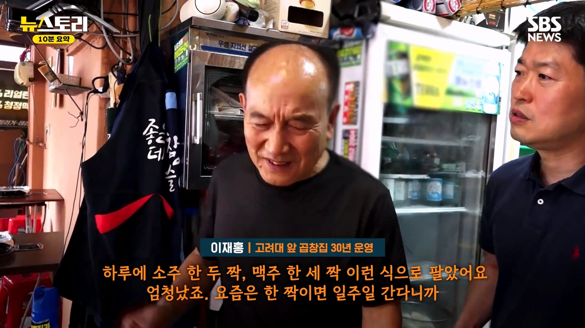
옛날에는 학생 3명 오면 소주 10병 먹었는데
최근에는 3명 오면 1~2병 먹는다고 함
소주보다 음료수가 더 많이 팔린다고...
장사 안되서
지난해에 가게 내놨다고 함
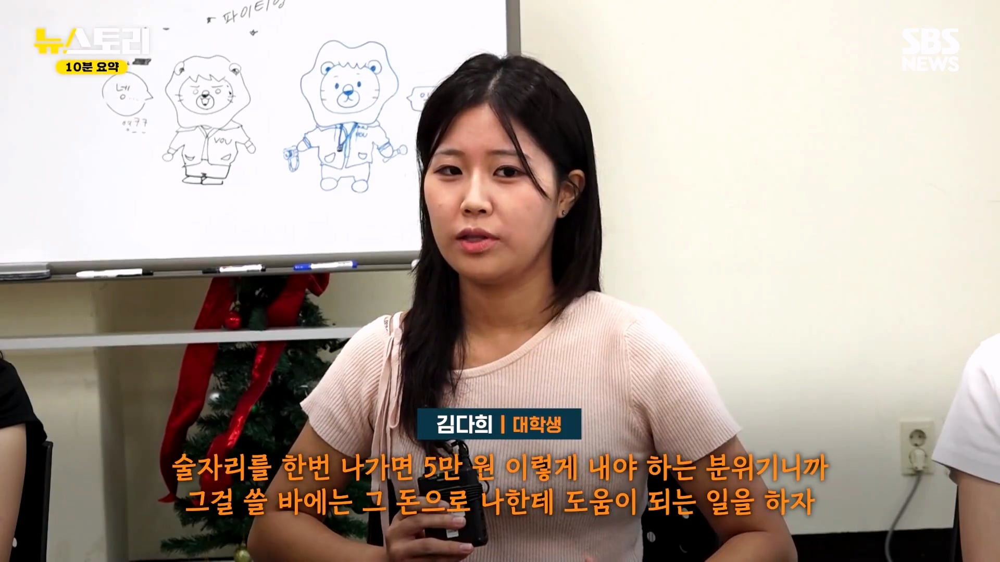
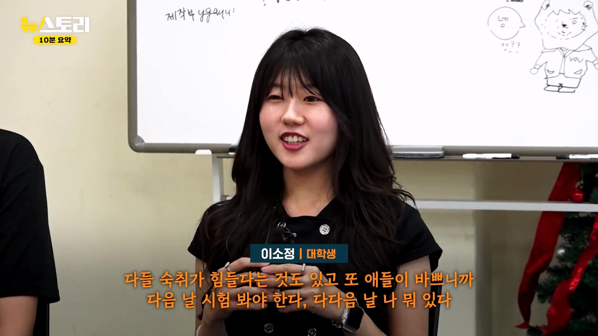
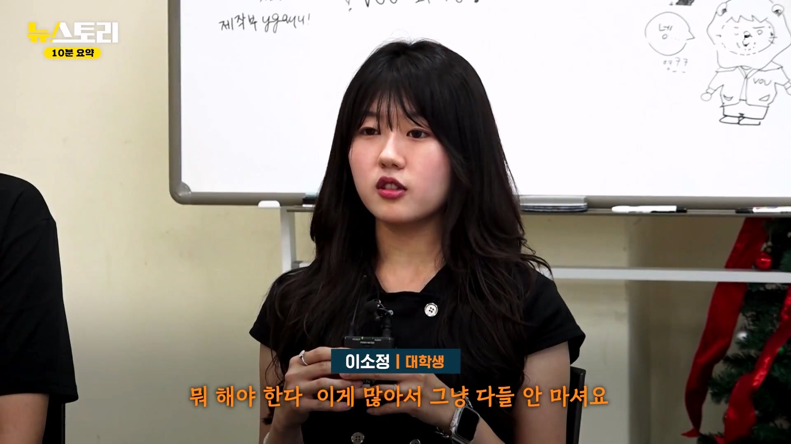
요즘 대학생들이 술 안 마시는 이유
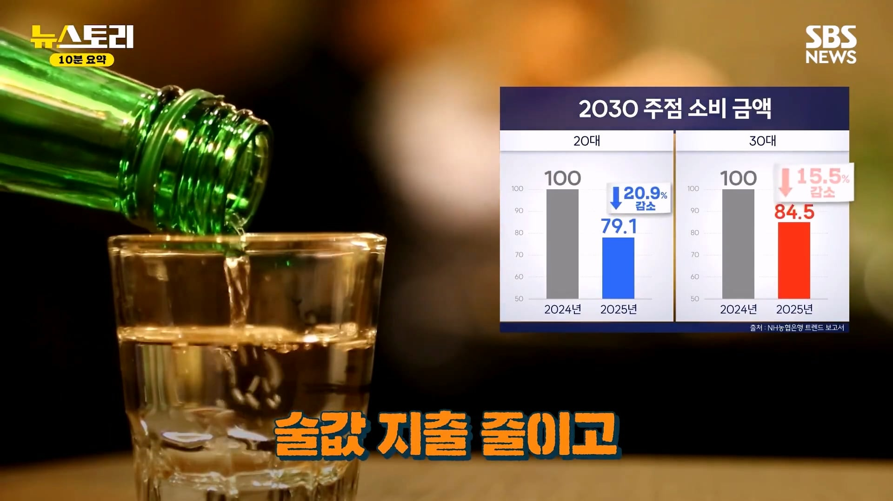
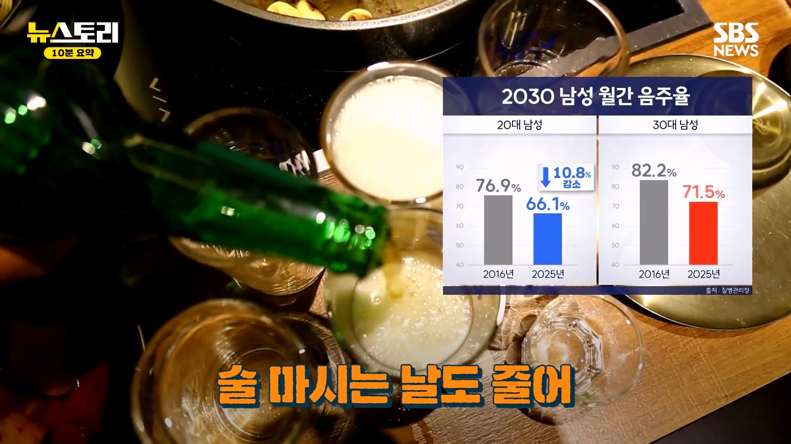
코로나로 술 먹는 문화가 많이 줄었다
일부 사람들이 술 안 마셔도 상관 없지 않냐는
문화가 확산되었다
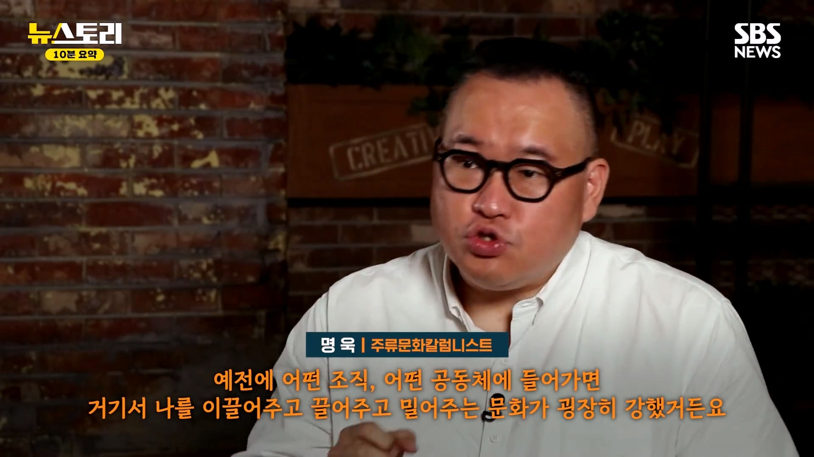
과거에는 인맥이 엄청 중요했다
하지만 요즘에는 인맥보다 실력이 더 중요하게 되었다
그래서 음주문화가 줄어든 것
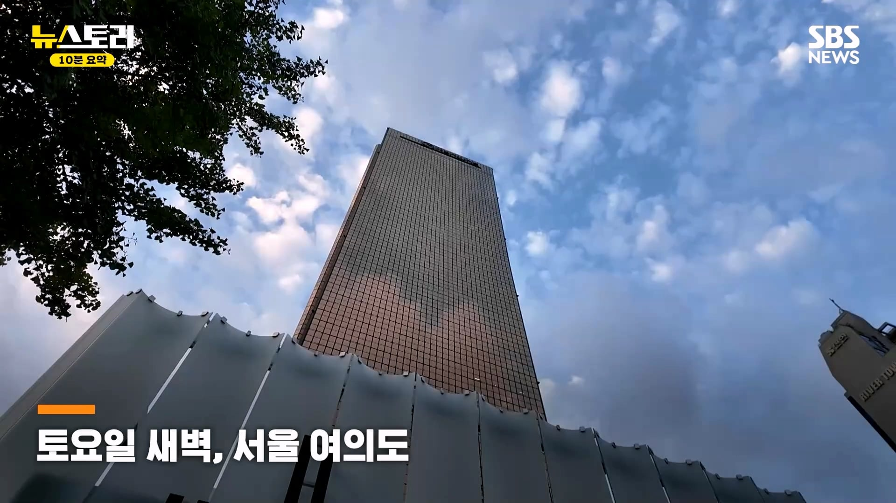
뜬금없이 김동현 나옴
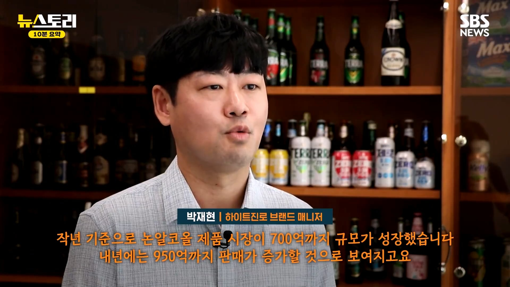
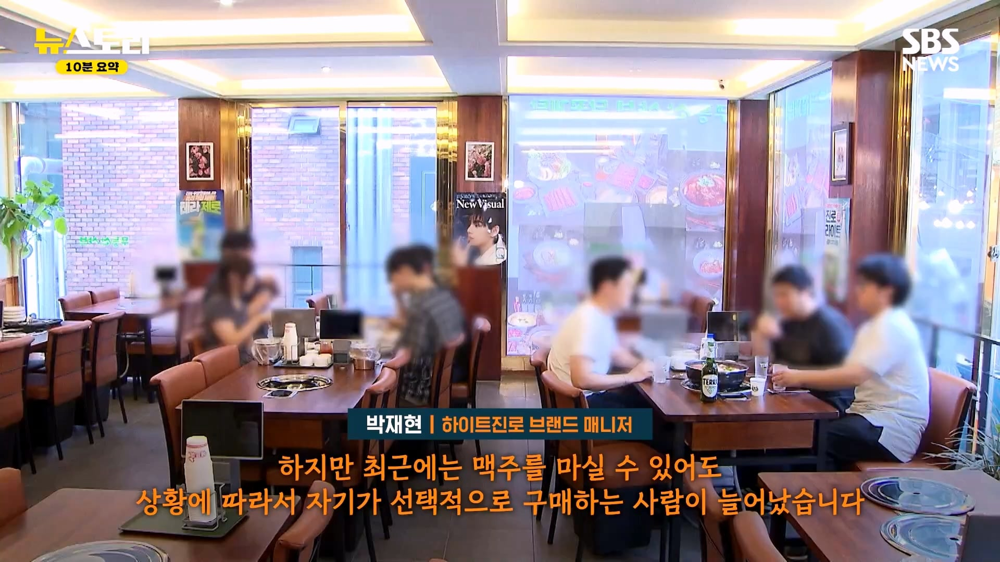
논알코올 시장 커지고 있다
과거에는 술 못 먹는 사람들이 논알코올 먹었는데
현재는 일부러 논알코올 먹기도 한다
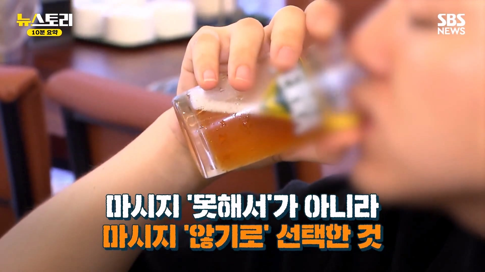
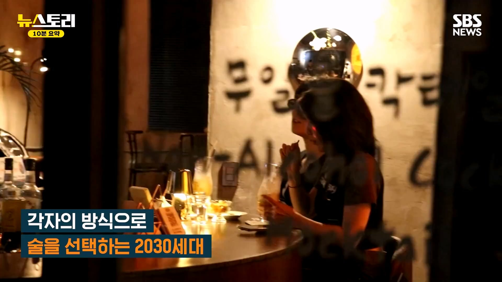
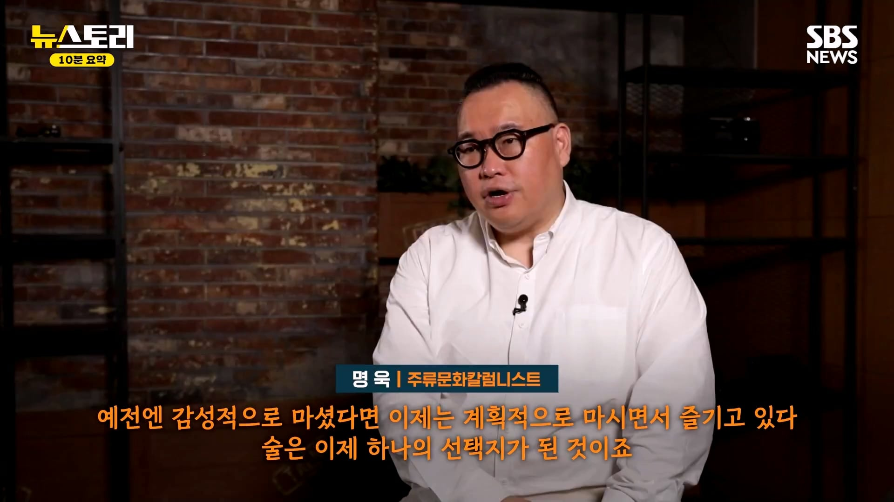
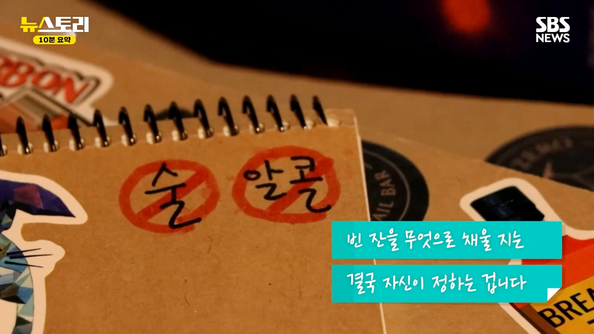
댓글
수집 당시 댓글 38개
ARKK · 12 시간 전
이러니 저러니 해도 사회가 성숙하고 발전하고 있다는 뜻임.
도윤회 · 11 시간 전
맛없고 속만 아파. 취할거면 그냥 하이볼이나 위스키 마실래
자본주의 · 7 시간 전
빵대신케잌
지하왕국 · 10 시간 전
술에 안빠지면 좋지뭐
reflo · 10 시간 전
10년 넘게 장사하는데 비싸서 안마시는건 아닌거같음 그냥 코로나 이후로 문화가 많이 바뀜. 번화가에 있는 업장은 소주랑 맥주 안남긴다는 생각으로 예전부터 2천원에 팔았는데 코로나 이후로 전체매출은 늘었는데 주류매출이 확실히 줄었다
아생각이없 · 4 시간 전
비싸서 안먹다보니 주류가 저렴한 매장을 가게 되도 많이 안먹게 되는거는 아닐까?
헬리오 · 10 시간 전
친구랑 삼겹살 3인분 물냉2개 소주3병까니까 9만원돈나오던데 ㅋㅋㅋ 이돈을 사회초년생이 매번 친구만난다고 쓰기에는 쫌 말이안되는거같다 ㅋㅋ
렙만큼관심있음 · 10 시간 전
취하고 싶을때 먹는 기본템이 술집가면 병당 6~8처넌인데 소비가 당연히 줄지 시발 ㅋㅋㅋ
종갓집맛김치 · 10 시간 전
걍 옛날에는 즐길게 음주가무라 그런거 아님?
이혼 · 9 시간 전
여러 복합적인 이유도 있다만 요즘 세대들 사이에서 술마시는게 양아치같고 촌스러운 인식이 은근히 있음 노담 운동으로 담배피면 하류인생이란 인식이 생긴것처럼 술도 비슷함 다만 저런 인식은 소주나 맥주같은 취하려는 의도로 먹으려는 음주에 안해서 경박하다 느끼는거지 고급술들 같은 경우는 미식의 영역으로 오히려 소비가 늘어남 말그대로 술을 취하려고 먹는 마약세대가 아니라 순수하게 술 자체의 맛을 즐기는 세대로 변한게 큼
ㅉㅉㅂㅇㅁㅇ · 9 시간 전
4~50대 노인네들 술먹고 개 진상짓 하는거 질리도록 봐서 그럴듯
프시케 · 8 시간 전
옳게된 현상이네
순애전도사 · 8 시간 전
병신같은 40대 이상 세대들의 문화가 사라져가는거죠 다행임
엔타쿠 · 8 시간 전
뭐 구구절절 이유 존나게 찾는데 소주+안주값 존나 비싼거는 언급 하나도 없노 ㅋㅋ 그돈씨 마인드지
lllIlIIllIIl · 8 시간 전
좋은 현상이다 이제 담배를 조져야함
이렀게않돼나요 · 8 시간 전
생각해보니 나 대학생때랑 비교하면 술값이 너무 비싸지긴 했네 대학생이 저 돈주고 사먹을 돈이 어딨어
게이트 · 8 시간 전
인간에 대한 스탠다드가 올라가서
김빵순 · 8 시간 전
술 다운 술은 잘 팔림 술 같지도 않은 소주가 잘 안팔리지 맛이 없으니까
불타는케리건 · 8 시간 전
몸이 술 잘못받음 강제로 먹는 문화가 사라짐 자연스레 안먹음 술먹고 깽판치고 주정 민폐 행위를 가족친인척주변이웃등에서 어릴적부터 경험하다보니 자연스레 안좋은인식 생겼음 술먹으면 식사값이 너무비싸짐 차끌고다니니 대리비등등 귀찮아서 안먹음 다음날 숙취싫음 맛없음
훈지를바라는삶 · 8 시간 전
직장 술문화만해도 술 소비량 줄여야하는 이유로 충분함 얼마나 많은 사람들이 그걸로 건강조지고 세상 하직했는데
RogueKim · 7 시간 전
옳게되어가는거지
광어우럭따 · 7 시간 전
위스키가 싸지고 있어.....😃
논리왕전기 · 7 시간 전
그돈이면 씨발거 제로콜라가 (같은 가게 기준으로도) 3캔인데.
리비아의개트롤 · 6 시간 전
현실은 대학생들이 똑똑해지고 있다는거다
이것도너프해보시지 · 6 시간 전
시간이없어서
잠지민 · 6 시간 전
숙취가 싫어 ㄹㅇ
코노 · 6 시간 전
술먹느니 러닝 빡런하거나 자전거로 임도 업힐 조지고 짬뽕한그릇 들이키는게 훨씬 쾌감 쩔음
일하기싫어요 · 6 시간 전
비싸고 귀찮아 이제... 위스키사서 집에서 마시는게 고트
뽀롱뽀롱뾰로로 · 6 시간 전
소주는 맛없어서 안먹고 맥주는 마시는데, 요즘 필라이트나 필굿 마심 ㅎㅎ 그거 마셔도 꽤 괜찮더라 ㅎㅎ
고니라고해요 · 6 시간 전
강제로 마시는 문화 없어진건 좋음
자유게시판 · 6 시간 전
위스키가격이 2년전보다 싸지고 있어서 좋다. 하지만 그놈의 주세. 그리고 곧 시행한다는 경고문스티커 망할 놈들.
뺍쁌 · 6 시간 전
식당에서 두 병 마실 돈이면 집에서 화요나 사케 사서 마심
dotnet · 5 시간 전
오히려 건강해진거같음. 술자리가 반필수인 세대가 뒤로 밀려야 맞지. 그땐 그게 정답이었고, 지금은 이게 정답이니까
qO도Op · 5 시간 전
우리나라 더 잘 되겠네
ziok · 5 시간 전
소주 좋아해서 종종 먹는데도 소주따위가 식당에서 먹기엔 너무비쌈
포도음료 · 5 시간 전
틀딱새끼들 쩝쩝거리면서 많이먹고 술먹고 소리지르는게 사회생활이고 문화다 하는거 진짜 도끼로 목 내려치고 싶음 ㅋㅋ
whoiam · 4 시간 전
비싸
cw 7 · 4 시간 전
걍 영화관이랑 같은 맥락아니냐 맛없고 비싸지니까 안먹는거 아님?